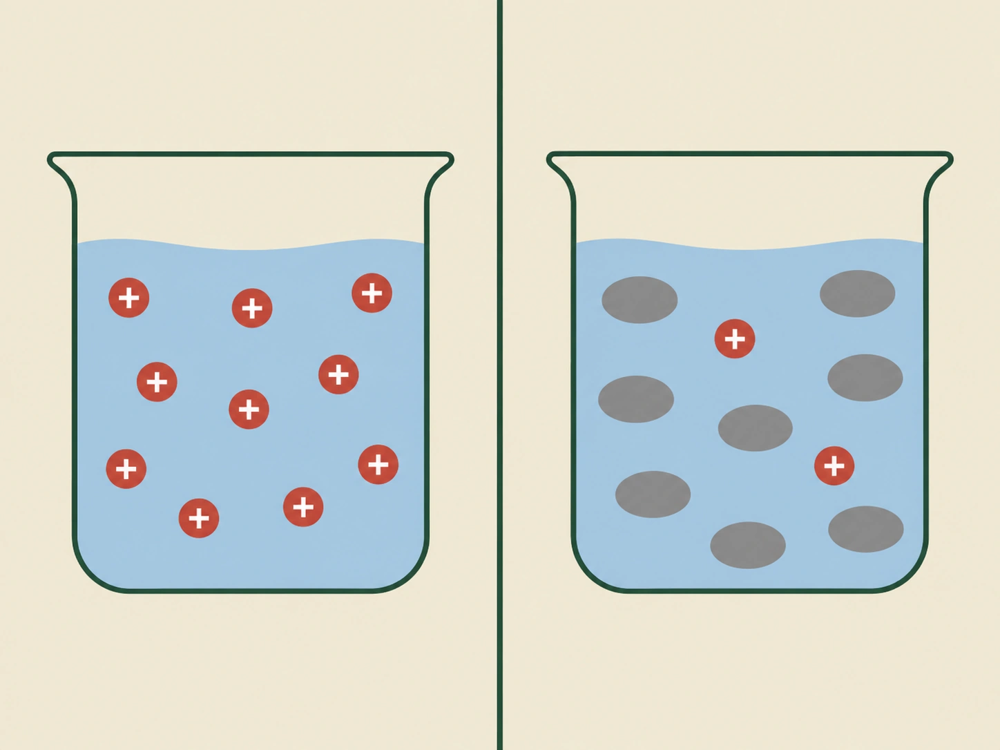

- Stark och svag beskriver hur lätt syran avger sina vätejoner
- En stark syra avger nästan alla
- En svag syra avger bara en del
- Det säger inget om hur mycket syra som finns i lösningen
- Hur lätt vätejonen avges beror på hur hårt den sitter fast
Alla syror gör samma sak: de avger vätejoner till vatten. Men de gör det inte lika lätt, och det är skillnaden mellan starka och svaga syror.
Vad orden betyder
Tänk dig att du häller lika mycket av två olika syror i två glas vatten.
I det ena glaset avger nästan varenda syrapartikel sin vätejon. Vattnet fylls av vätejoner. Det är en stark syra.
I det andra glaset avger bara några få av syrapartiklarna sin vätejon. Resten behåller den och fortsätter simma omkring hela. Det är en svag syra.
Lika mycket syra i båda glasen — men helt olika många vätejoner i vattnet.
- Räkna de röda partiklarna i varje glas
- Att det är lika mycket vätska i båda glasen
- Vad som finns i det högra glaset som inte finns i det vänstra
- Att skillnaden inte handlar om hur mycket syra som hällts i

Vad orden inte betyder
Här måste du vara noga, för det här är den vanligaste missuppfattningen i hela kapitlet.
Stark och svag säger ingenting om hur mycket syra det finns i lösningen. De säger bara hur lätt syran släpper ifrån sig sina vätejoner.
En stark syra kan finnas i mycket liten mängd, utspädd i massor av vatten. En svag syra kan finnas i stor mängd, nästan outspädd. Orden beskriver syrans natur, inte mängden.
Vi kommer tillbaka till det i nästa avsnitt, för där handlar allt om just mängden.
Varför vissa släpper lättare
Om du undrar varför en syra släpper sin vätejon lättare än en annan är svaret ganska enkelt.
Det beror på hur hårt vätejonen sitter fast i syrans partikel. Sitter den löst lossnar den lätt, och syran är stark. Sitter den hårt behövs mer för att få loss den, och syran är svag.
- Stark och svag beskriver hur lätt syran avger sina vätejoner
- En stark syra avger i princip alla vätejoner den kan avge
- En svag syra avger bara en del
- Styrka är inte samma sak som koncentration
- Styrkan beror på hur hårt vätejonen sitter fast i syrans partikel
Syror kan delas in i starka syror och svaga syror. Skillnaden handlar om hur lätt syran avger sina vätejoner när den kommer i kontakt med vatten.
Stark och svag beskriver hur lätt syran avger sina vätejoner — inte hur mycket syra som finns i lösningen.
En stark syra avger i princip alla vätejoner som den kan avge när den löses i vatten. Vätejonerna tas direkt upp av vattenmolekyler och bildar oxoniumjoner, \(\ce{H3O+}\).
En svag syra avger däremot bara en del av sina vätejoner. I lösningen finns därför både syramolekyler som fortfarande har kvar sin vätejon och partiklar som har avgett den.
Det är viktigt att skilja syrans styrka från syrans koncentration. Styrkan beskriver hur lätt syran avger vätejoner. Koncentrationen beskriver hur mycket syra som finns i en viss mängd lösning. En stark syra kan därför vara utspädd och en svag syra kan vara koncentrerad.
Vad som avgör hur lätt en syra avger sin vätejon beror på hur hårt vätejonen sitter fast i syrans partikel. Sitter den löst avges den lätt, och syran är stark.
Vad "sitter hårt" egentligen betyder
Standardtexten sa att styrkan beror på hur hårt vätejonen sitter fast. Det är rätt, men det säger inte vad som avgör hur hårt den sitter.
Två saker samverkar.
Det första är bindningen mellan vätet och resten av molekylen. Ju svagare den bindningen är, desto lättare lossnar protonen. Bindningens styrka beror bland annat på hur stor atomen är som vätet sitter på — ju större atom, desto längre och svagare bindning.
Det andra, och oftast viktigare, är hur stabil den jon är som blir kvar när protonen lämnat.
Den kvarvarande jonen avgör
Tänk på vad som händer när en syra avger sin proton. Kvar blir en negativt laddad partikel.
Om den partikeln är stabil, alltså trivs med sin negativa laddning, kommer syran gärna att avge protonen. Om partikeln är instabil vill den hellre ta tillbaka protonen, och då avges den ogärna.
Vad som gör en negativ jon stabil är framför allt att laddningen kan spridas ut över flera atomer i stället för att sitta koncentrerad på en. Kloridjonen som blir kvar efter saltsyra är mycket stabil — det är en ensam jon med hela ädelgasstruktur. Acetatjonen som blir kvar efter ättiksyra är mindre stabil, och därför är ättiksyra svagare.
Varför svavelsyrans andra proton sitter hårdare
Nu blir svavelsyran begriplig.
Den första protonen lämnar en neutral molekyl och skapar en negativ laddning. Det går lätt.
Den andra protonen ska lämna en partikel som redan är negativ, och en positiv proton dras till negativ laddning. Den ska alltså slitas loss från något som håller fast den hårdare än förut.
Samma princip gäller alla syror som kan avge mer än en proton: varje steg är svårare än det förra, eftersom den kvarvarande partikeln blir alltmer negativ.
Om modellen: standardtexten beskrev styrkan som en egenskap syran råkar ha. Med bindningsstyrka och jonstabilitet blir det i stället något som följer av hur molekylen är byggd — och något man kan resonera sig fram till för en syra man aldrig sett.
- Tre viktiga starka syror: saltsyra, svavelsyra, salpetersyra
- De avger nästan alla sina vätejoner i vatten
- Saltsyra är väteklorid löst i vatten
- Svavelsyra kan avge två vätejoner
- Starka syror kan ge mycket lågt pH
Tre starka syror är särskilt viktiga att känna till: saltsyra, svavelsyra och salpetersyra. De används i industrin, och saltsyra finns dessutom i din egen mage.
Gemensamt för dem är att de avger sina vätejoner mycket lätt. Nästan varje partikel som hamnar i vattnet släpper ifrån sig sin vätejon direkt.
Saltsyra
Saltsyra är ämnet väteklorid löst i vatten.
Varje vätekloridpartikel har en vätejon att avge. När den hamnar i vatten lämnar vätejonen partikeln nästan omedelbart, och kvar blir en kloridjon.
Lösningen innehåller därför vätejoner och kloridjoner, och det är vätejonerna som gör den sur.
Salpetersyra
Salpetersyra fungerar på samma sätt. Varje partikel avger en vätejon, och kvar blir en nitratjon.
Svavelsyra
Svavelsyra skiljer sig från de andra två på ett sätt.
Varje svavelsyrapartikel har två vätejoner som kan avges, inte en. Den första avges mycket lätt, precis som hos saltsyra. Den andra sitter hårdare och avges bara delvis.
Anledningen är att den andra vätejonen ska lämna en partikel som redan blivit negativ när den första lämnade. En positiv vätejon dras till negativ laddning och hålls därför kvar.
Svavelsyra räknas ändå som en stark syra, eftersom det första steget ensamt ger så många vätejoner.
Hur surt blir det?
En stark syra kan ge mycket lågt pH. Men hur lågt beror också på hur mycket syra som finns i vattnet.
En stark syra som är kraftigt utspädd kan ha ett ganska högt pH, trots att den är stark. Det är precis vad nästa avsnitt handlar om.
- Saltsyra, svavelsyra och salpetersyra är de viktigaste starka syrorna
- De avger i princip fullständigt sina vätejoner till vatten
- Svavelsyra har två vätejoner att avge, och den andra sitter hårdare
- Hur lågt pH som uppnås beror också på koncentrationen
Tre viktiga starka syror är saltsyra, svavelsyra och salpetersyra. Gemensamt för dem är att de reagerar mycket lätt med vatten och i princip fullständigt avger de vätejoner som kan avges i vattenlösningen.
Saltsyra, HCl, bildas när väteklorid löses i vatten. Vätekloriden avger sin vätejon till en vattenmolekyl. Då bildas en oxoniumjon och en kloridjon:
Salpetersyra, \(\ce{HNO3}\), fungerar på liknande sätt. När den reagerar med vatten bildas oxoniumjoner och nitratjoner:
Svavelsyra, \(\ce{H2SO4}\), skiljer sig från de två andra genom att varje molekyl innehåller två vätejoner som kan avges. Den första avges mycket lätt, precis som hos saltsyra. Den andra sitter hårdare, eftersom den ska lämna en partikel som redan har en negativ laddning — och en negativ laddning håller kvar den positiva vätejonen. Därför avges den andra vätejonen bara delvis.
Svavelsyra är alltså stark när det gäller den första vätejonen och svagare när det gäller den andra. I praktiken räknas den ändå som en stark syra, eftersom det första steget ger så många oxoniumjoner.
Starka syror kan ge upphov till en hög koncentration av oxoniumjoner och därmed ett lågt pH. Hur lågt pH blir beror dock också på hur koncentrerad syralösningen är.
Vad "i princip fullständigt" betyder
Standardtexten säger att en stark syra avger sina vätejoner "i princip fullständigt". Den formuleringen är noggrannare vald än den ser ut.
För en stark syra i vanlig utspädning är andelen avgivna protoner så nära hundra procent att skillnaden saknar praktisk betydelse. Men den är inte exakt hundra. Ett fåtal partiklar finns alltid kvar oförändrade, och i mycket koncentrerade lösningar blir andelen märkbar.
Skillnaden mellan stark och svag är därför inte en skillnad i sort utan i grad. Det finns ingen skarp gräns där en syra slutar vara svag och börjar vara stark — precis som det inte fanns någon skarp gräns mellan jonbindning och kovalent bindning i repetitionsavsnitt 3.
Vattnet sätter taket
Det finns en gräns för hur stark en syra kan vara i vattenlösning, och den gränsen är vattnet självt.
Alla syror som är starkare än oxoniumjonen ger i vatten samma resultat: de avger sin proton fullständigt, och det som finns i lösningen är oxoniumjoner. Saltsyra, salpetersyra och perklorsyra har mycket olika styrka i sig, men i vatten går det inte att skilja dem åt. De är alla "helt avgivna".
Fenomenet kallas att vattnet nivellerar syrorna — det jämnar ut skillnaderna mellan alla som är starkare än en viss gräns.
Vill man jämföra starka syror med varandra måste man därför använda ett annat lösningsmedel, ett som inte tar emot protoner lika villigt. Det gör man i forskning, men aldrig i en högstadiesal.
Om modellen: standardtexten delade syror i två fack. I verkligheten är styrka en glidande skala, och vattnet döljer den ena änden av den. Indelningen är användbar men den är vår, inte naturens.
- Många vanliga syror är svaga
- Ättiksyra, citronsyra, kolsyra, mjölksyra och myrsyra
- Bara en del av partiklarna avger sin vätejon
- Resten finns kvar hela i lösningen
- Reaktionen går åt båda hållen samtidigt
De flesta syror du möter till vardags är svaga. Ättiksyra i ättika, citronsyra i citroner, kolsyra i läsk, mjölksyra i filmjölk och myrsyra hos myror — alla är svaga syror.
Det betyder inte att de är ofarliga. Det betyder att de avger sina vätejoner ogärna.
Vad som händer i glaset
Häller du ättiksyra i vatten avger bara en del av partiklarna sin vätejon. Resten behåller den.
Är det till exempel hundra ättiksyrapartiklar i vattnet kan kanske någon enstaka av dem ha avgett sin vätejon vid ett givet ögonblick. De andra simmar omkring hela.
Det är därför en svag syra ger färre vätejoner än en stark, även om det finns lika mycket syra i båda.
Reaktionen går åt båda hållen
Nu kommer något som är lätt att missa, och som förklarar hela saken.
När en svag syra hamnar i vatten sker två saker samtidigt. Syrapartiklar avger vätejoner — men vätejoner fastnar också tillbaka på partiklar som redan avgett sin, så att syran återbildas.
Båda reaktionerna pågår hela tiden. Efter en stund ställer de in sig i en balans där lika många partiklar avger som tar tillbaka, och då ändras ingenting mer utåt sett.
Det skrivs med en särskild pil som pekar åt båda hållen: \(\ce{<=>}\)
Den pilen betyder just det: reaktionen går åt båda hållen samtidigt, och den stannar aldrig av helt.
Det är andelen som avgör
Skillnaden mellan starka och svaga syror handlar alltså inte om vilken syra det finns mest av, eller vilken lösning som har lägst pH.
Den handlar om hur stor andel av syrans möjliga vätejoner som faktiskt avges när syran möter vatten. Nästan alla betyder stark. Bara en del betyder svag.
- Ättiksyra, citronsyra, kolsyra, mjölksyra och myrsyra är svaga syror
- Bara en del av syramolekylerna avger sin vätejon
- Reaktionen skrivs med dubbelriktad pil, \(\ce{<=>}\)
- Det råder en balans mellan de två riktningarna
- Skillnaden handlar om andelen avgivna vätejoner
Många syror är svaga. Exempel är ättiksyra, citronsyra, kolsyra, mjölksyra och myrsyra. De förekommer bland annat i livsmedel, i naturen och i levande organismer.
När en svag syra blandas med vatten avger bara en del av syramolekylerna sina vätejoner. Resten finns fortfarande kvar som syramolekyler i lösningen.
Ättiksyra kan användas som exempel. När en ättiksyramolekyl avger en vätejon till en vattenmolekyl bildas en oxoniumjon och en acetatjon:
Här används en dubbelriktad pil, \(\ce{<=>}\), eftersom reaktionen kan gå åt båda hållen. Ättiksyramolekyler avger vätejoner, men samtidigt kan vätejoner överföras tillbaka så att ättiksyra återbildas. Efter en tid uppstår en balans mellan de båda reaktionerna.
Det är detta som är grunden till att ättiksyra är en svag syra: bara en del av syramolekylerna har avgett sin vätejon vid en viss tidpunkt.
Samma grundprincip gäller för andra svaga syror. De kan avge vätejoner, men reaktionen med vatten är inte fullständig.
Skillnaden mellan starka och svaga syror handlar alltså inte om vilken syra som det finns mest av eller vilken lösning som har lägst pH. Den handlar om hur stor andel av syrans möjliga vätejoner som avges när syran reagerar med vatten.
Balansen är inte stillastående
Standardtexten sa att det uppstår en balans mellan de två reaktionerna. Ordet balans kan låta som att allt stannar av. Det gör det inte.
Vid jämvikt, som tillståndet kallas, pågår båda reaktionerna för fullt. Ättiksyramolekyler avger protoner i samma takt som acetatjoner tar tillbaka dem. Eftersom takten är densamma åt båda hållen förblir antalen oförändrade, men de enskilda partiklarna byter ständigt form.
Det är ungefär som en rulltrappa där lika många går uppför som nedför. Antalet personer på trappan är konstant, men ingen står stilla.
Jämvikten går att rubba
Och här blir det användbart.
Tar man bort något av det som bildas kan reaktionen inte längre gå lika fort åt det hållet tillbaka. Jämvikten förskjuts, och mer av syran avger sin proton för att kompensera.
Det är precis vad som händer vid neutralisation. Tillsätter man en bas plockar den bort oxoniumjonerna ur lösningen. Då återbildas mindre ättiksyra, fler ättiksyramolekyler avger sin proton, och till slut kan hela mängden syra neutraliseras.
Att en syra är svag betyder alltså inte att bara en del av den går att neutralisera. Det betyder bara att bara en del har avgett sin proton vid varje givet ögonblick.
Varför det spelar roll i kroppen
Jämvikter av det här slaget finns överallt i naturen, och de gör något viktigt: de motstår förändring.
Blodet innehåller kolsyra och vätekarbonatjoner i jämvikt. Tillförs en liten mängd syra förskjuts jämvikten åt ena hållet och fångar upp den; tillförs bas förskjuts den åt andra hållet. Resultatet är att blodets pH hålls stabilt runt 7,4 trots att kroppen hela tiden producerar syror.
Ett sådant system kallas buffert, och det bygger helt på att svaga syror inte reagerar fullständigt.
Om modellen: standardtexten beskrev den ofullständiga reaktionen som en brist — syran gör inte hela jobbet. Med jämvikten blir det i stället en egenskap med ett syfte: just det att reaktionen kan gå åt båda hållen är vad som gör svaga syror användbara i naturen.
Laddar övningskort…
Laddar frågor ...